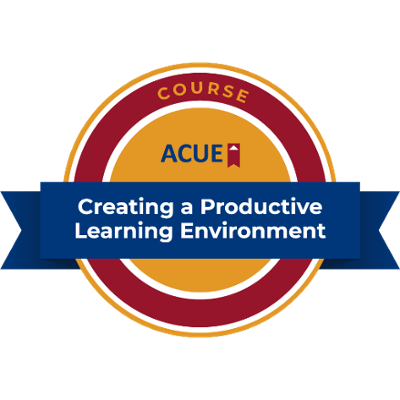

Teaching Interests
Economics
- Principles of EconomicsMicroeconomics and macroeconomics
- Intermediate Microeconomics
Data and Methods
- Statistics
- Econometrics
- Econometric SoftwarePython, R, or Stata
Health and Policy
- Health Economics
- Economics of Health Policy
- Evaluating Health and Substance Use Policy with Public DataA new course I would like to develop
Finance
- Introduction to Finance
My teaching philosophy is “Teaching at the Margin.” Read it below Teaching statement (PDF)
Teaching Experiences
| Course | Role | Term |
|---|---|---|
| Lehigh University | ||
| ECO 301/403 Econometric Software | Adjunct Professor | Spring 2027 (scheduled) |
| ECO 146 Intermediate Microeconomic Analysis | Adjunct Professor | Summer 2026 |
| ECO 001 Principles of Economics | Teaching Assistant | 2022-2024, Fall 2026 |
| ECO 045 Statistical Methods | Teaching Assistant | Winter 2026 |
| FIN 125 Introduction to Finance | Teaching Assistant | 2024-2025 |
| Moravian University | ||
| HHUM 125 Introduction to Health Humanities | Guest Lecturer | February 2026 |
Student Evaluations
Spring 2025FIN 125Teaching Assistant4.484.38
Spring 2024ECO 001Teaching Assistant4.614.31
Fall 2022ECO 001Teaching Assistant4.544.39
Selected terms. Click a teaching assistant term to see each question. Ratings are the average of the six standard Lehigh evaluation questions on a scale of 1 to 5. Lehigh is the university-wide average on the same evaluation form in the same term, computed the same way. Full evaluations are available on request.
What Students Say
"Richard genuinely seems like he cares about all the kids in our class and how well we do in the class. He even knows all of our names which a lot of TAs don't know."
ECO 001, Fall 2022
"He ties all the topics together with graphs and visuals, which allows the students to not just understand the current subject but an overall understanding of how everything in finance is tied together. ... Whenever a student is confused, he tries to explain the topic in another way until he guarantees the students fully comprehend it."
FIN 125, Spring 2025
"When you made us answer a question it helped me understand the concept even more even if I got it wrong you explained it and it helped."
ECO 001, Spring 2023
"The live recorded lectures were very clear and I feel like I was able to learn everything I needed to as if it was an in person class."
ECO 146, Summer 2026
"Haiming Li was a great TA, and made many of the concepts in economics easy to understand with real world examples. He was also very interactive, which made his recitation easy to follow."
ECO 001, Fall 2022
"Richard always tries to go above and beyond with helping students and explains the course content very well. He also tries to ensure student's success by taking time to give good examples or practice problems."
ECO 001, Spring 2024
"My TA was very respectful and engaging. When I wanted to go over my exam, he made time that exact day and he helped me realize my errors."
FIN 125, Fall 2024
Teaching Philosophy
My teaching philosophy is Teaching at the Margin
. Economists make decisions at the margin: small changes, each one checked against what just happened. I teach the same way. Each letter is a practice I use in class; open a card to see how it works in my courses.
Make it concrete
New ideas start from prices students pay every day.
In my classroom
In ECO 146, students turned the nominal price of a $12 sandwich into a real price in class, then did the same for a $90 textbook rental on the next problem set. See the exercise.
Attempt first AI
Students try before they see an answer.
In my classroom
Every ECO 146 lesson ended with a short exercise that students answered before I showed the solution. In recitation I give two to three minutes of thinking time before anyone speaks.
With AI: students solve a problem on their own before they ask an AI tool, and solve a new one on their own afterward.
Release the steps
A complete worked example comes first; then I hand the steps over.
In my classroom
Problem Set 2 walked through a market demand problem in six numbered steps. A similar midterm problem gave four prompts, and students supplied the missing steps.
Get every voice
Who answers should not depend on who raises a hand first.
In my classroom
I use name cards until I know every student. After thinking time I call on students at random, and a student who is unsure can pass the question to a classmate nearby.
Inspect the reasoning AI
A score shows that an answer went wrong, not why.
In my classroom
After the first ECO 001 quiz this fall, students first worked out why they lost points, and my review started from their answers. In office hours, students explain their reasoning before I respond.
With AI: students check an AI-generated answer claim by claim against their own diagram and correct what it gets wrong.
Nudge and adjust
Small corrections, made early.
In my classroom
After a hard topic, my follow-up message tells students exactly what to review, such as the meaning of elasticity and the midpoint formula. In ECO 146, automatically graded work showed within a day where the class stood; after the midterm I gave graphing and the calculus of optimization more time and pointed students to a math toolkit I wrote.
With AI in the room: a four-step activity
In my ECO 001 recitations this fall, I used an activity on tax incidence that I built in Lehigh's SMART program. Students use AI to support their understanding while checking its reasoning themselves. I plan to use similar steps in my Spring 2027 course.
- 1Solve without AIDraw and label a tax-incidence diagram and explain who bears more of the tax.
- 2Check the AIAnnotate an AI answer claim by claim against the diagram, correct its errors, and compare with a partner.
- 3Sharpen the promptRevise the prompt so the AI must use relative elasticity and a labeled diagram, then compare the two answers.
- 4Transfer without AISolve a new scenario alone first, then explain where an AI answer agrees or disagrees.
The activity is low stakes. When students use their own AI tool, they record the tool, their prompts, and how they checked the answer. MARGIN draws on practices from ACUE's Effective Teaching Practices modules and Lehigh's SMART program; my teaching statement (PDF) says more.
Course Materials
Samples from ECO 146, Intermediate Microeconomic Analysis, which I taught as an Adjunct Professor in Summer 2026.
- Syllabus Course objectives, grading, and policies.
- Course roadmap The six-week schedule on one page, with every assignment, quiz, and exam.
- In-class exercise, Class 2 An end-of-lesson exercise with answers and feedback, including the $12 sandwich question.
- Math toolkit A four-page formula sheet I wrote so students could review the algebra and calculus the course uses.
Professional Development

In October 2026 I completed Creating a Productive Learning Environment, a seven-module course in the Effective Teaching Practices program of the Association of College and University Educators (ACUE). I expect to finish the full 25-module program in May 2027.
- Starting Strong
- Fostering a Productive Learning Environment
- Helping Students Persist
- Advancing Achievement for All Students
- Embracing Diversity
- Checking for Student Understanding
- Providing Useful Feedback
This fall I am in the AI Innovator Track of Lehigh's Strategic Methods for AI-Responsive Teaching (SMART) program, where I designed the tax-incidence activity above and used it in my ECO 001 recitations.
I earned the Bloomberg Market Concepts (BMC) certificate from Bloomberg for Education in 2026.
Mentoring and Service
- Graduate Orientation Ambassador, College of Business, Lehigh University, 2025 and 2026
- President, Lehigh University Chinese Christian Fellowship, 2023 to present. I led the group's recruitment at the university student organization expo from 2023 to 2025 and organized Mid-Autumn Festival and Lunar New Year events.
- Referee, Journal of Mental Health Policy and Economics, 2026
In a department, I would like to take part in the work that shapes what students leave with: keeping the curriculum current, advising students on course choices and careers, and helping them find a first research or internship opportunity.